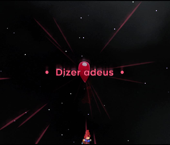
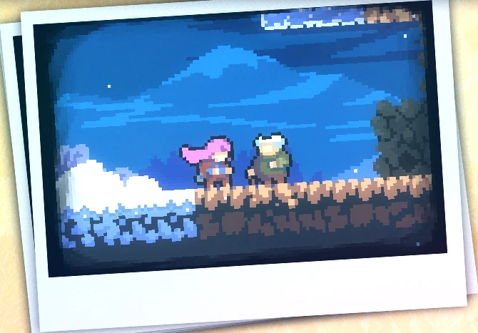
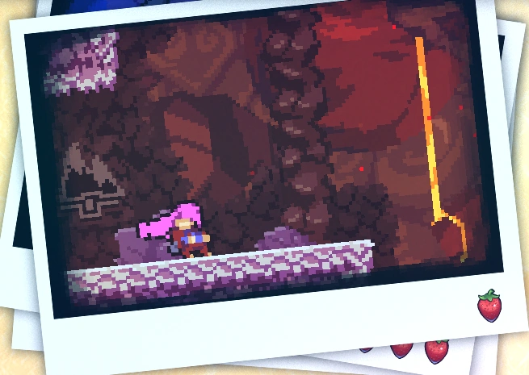
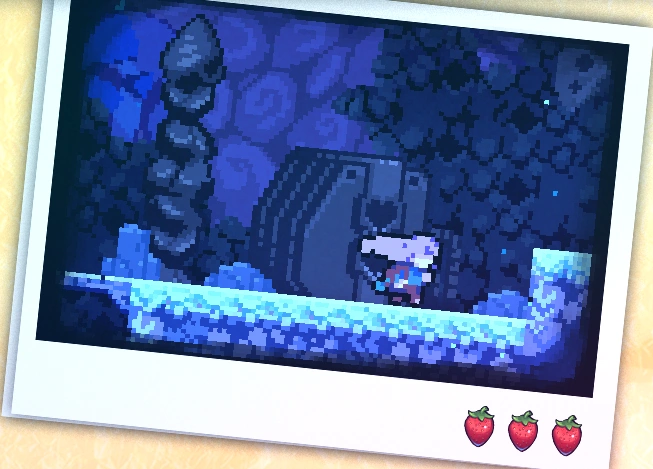

Capítulo 8: Núcleo
Núcleo é o oitavo capítulo de Celeste. O capítulo apresenta uma nova mecânica única: o dash não é mais recarregado quando o jogador pisa em alguma pltaforma ou chão, sendo possível recuperá-lo após passar por uma transição de sala ou pegando cristal de dash.
Mecânicas
Plot
Madeline retorna à montanha cerca de um ano depois para explorar os segredos da montanha, que lhe foram contados pela Velha no telefone. Madeline é informada de que o centro da montanha tem um poder extremo que afetará suas habilidades. Ela compreende isso quando não consegue usar seu segundo impulso e não consegue falar com Badeline também. Quando o jogador não coletou pelo menos 4 corações de cristal, a velha dirá a Madeline que talvez ela não esteja pronta para entrar no núcleo. Se o jogador tiver pelo menos 4 corações de cristal, Madeline entrará no Núcleo para procurar o coração da montanha. Após um desafio difícil, Madeline entrará em uma sala escura que ela acha familiar. No final, o último Coração de Cristal deste nível aparecerá e poderá ser coletado.
Diálogos
Coletáveis
Coração de cristal:
O coração de cristal do capítulo 8 é adquirido no quarto subcapítulo no final da fase. Para concluir o capítulo é necessário coletar o coração de cristal.
Fita cassete:
A fita cassete do capítulo 8 é adquirida no quarto subcapítulo na penúltima sala da fase. É necessário coletar a fita cassete para passar de sala.

Morangos:
• Morango dourado:
Conseguido após concluir a fase enquanto segura o morango dourado. Só pode ser coseguido após concluir o lado B do capítulo 8.
• Morango vermelho:
Morango 1: Morango vermelho:
Morango 2: Morango vermelho:
Morango 3: Morango vermelo com asas:
Morango 4: Morango vermelho:
Morango 5: Morango vermelho:
Subcapítulos
Núcleo possui 4 subcapítulos:
Início
No núcleo
Quente e Frio
O Coração da Montanha